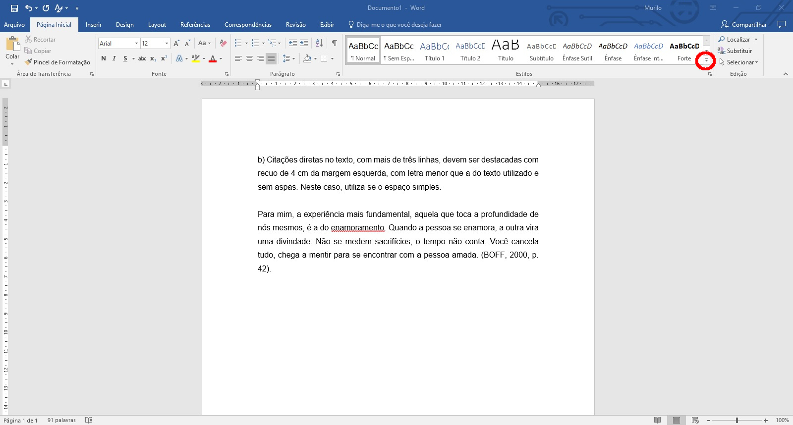
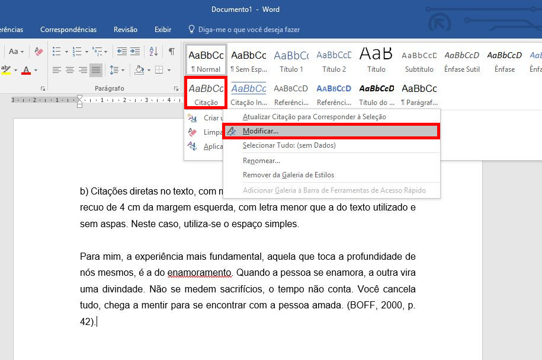
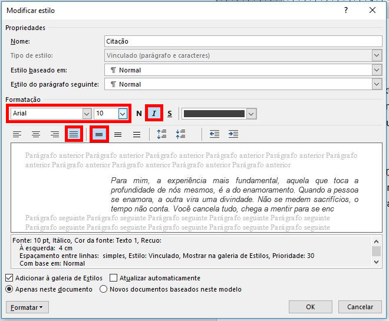
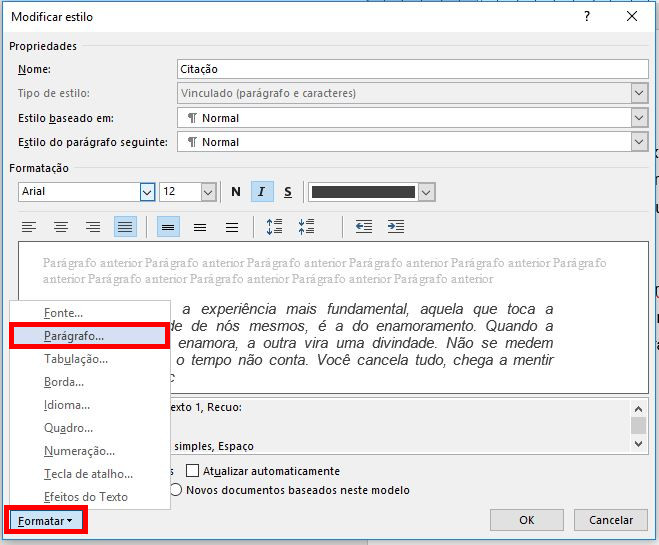
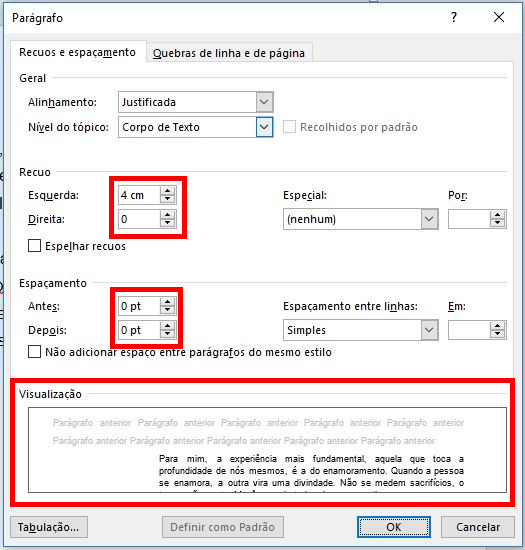
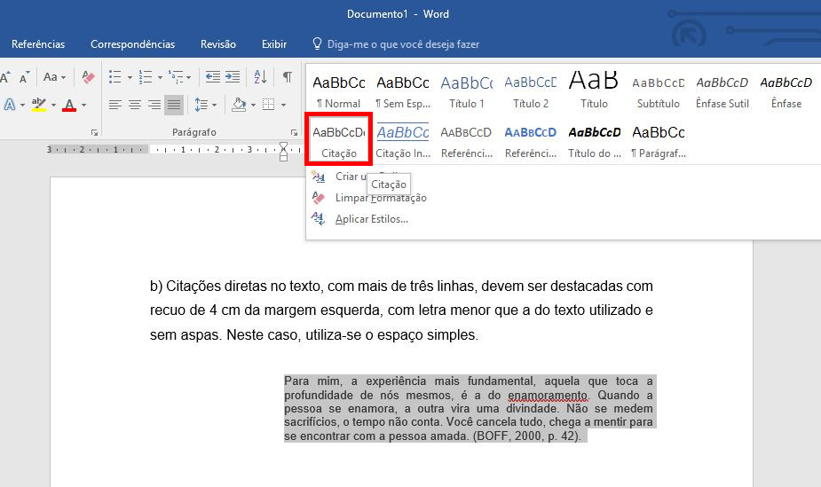
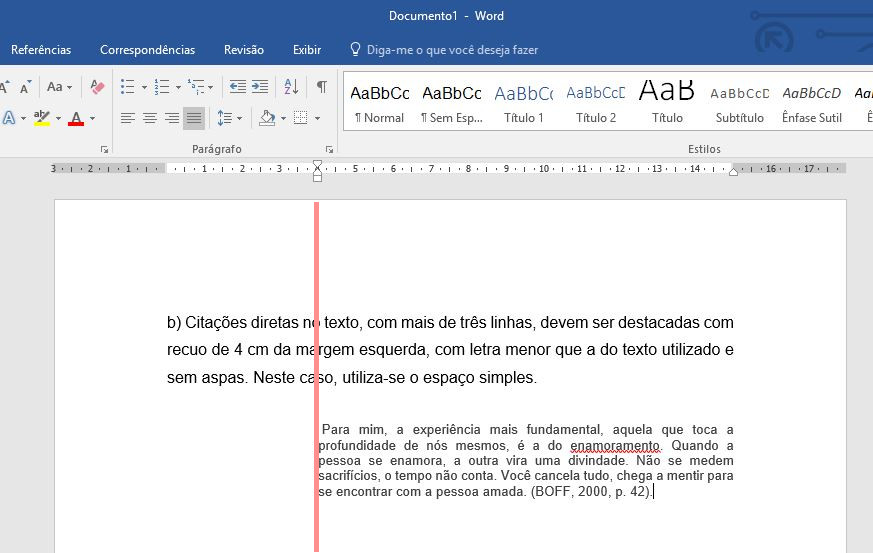
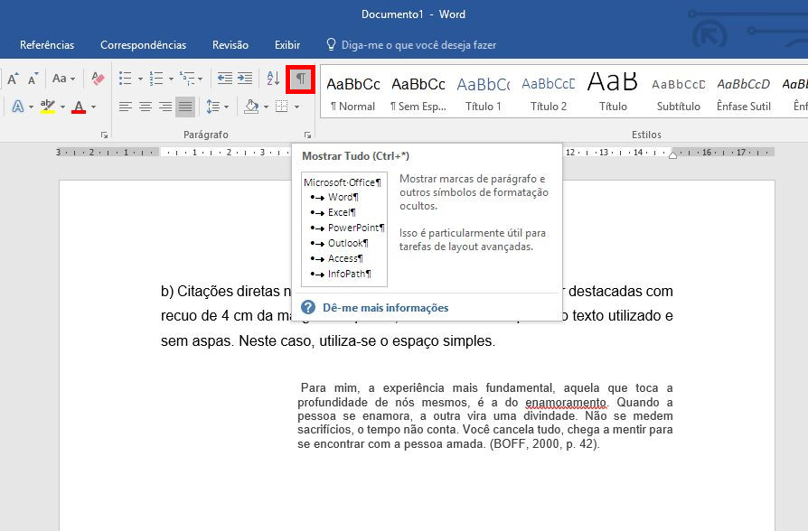
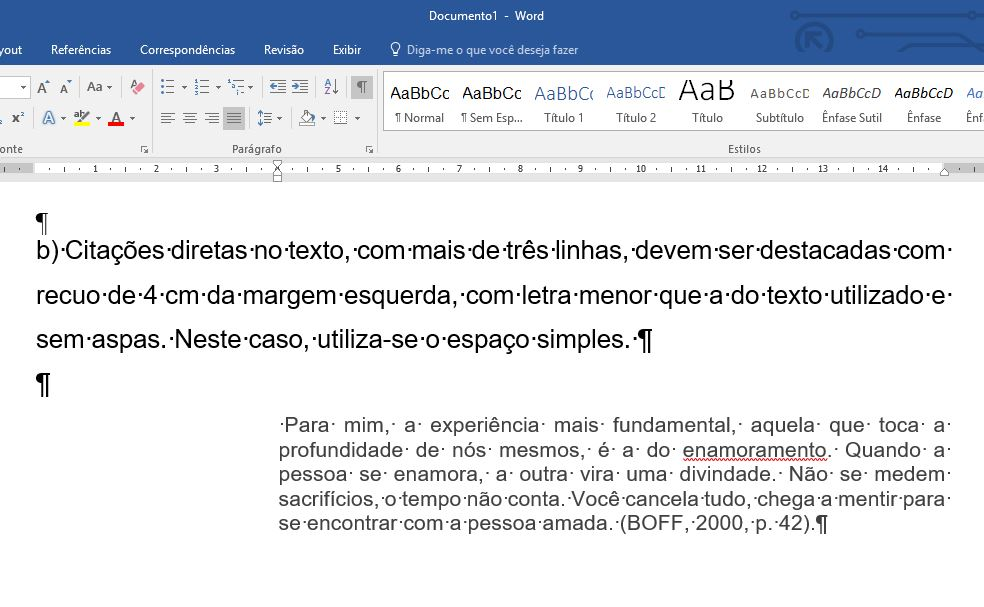
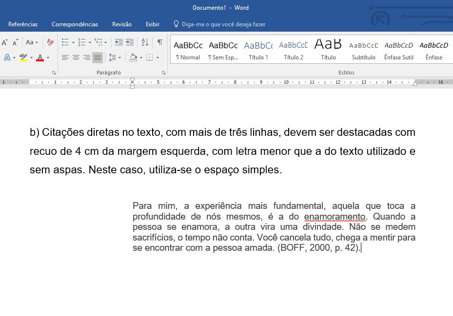

O texto digitado na Figura 1 foi retirado do documento "GUIA TRABALHOS ACADÊMICOS_abril 2015" e as instruções para fazer citação serão executadas a seguir.
Digite o seu texto que será uma citação direta.
Clique na seta indicada pelo círculo vermelho para expandir as opções da galeria de estilos.
Clique com o botão direito sobre o estilo Citação.
Clique em Modificar...
Desmarque a opção de fonte em itálico (se estiver marcado).
Configure a fonte para tamanho 10.
Clique no ícone para justificar o texto.
Clique no ícone que torna o espaçamento simples.
Veja Figura 3.
Siga as instruções para recuar o texto.
Clique no botão Formatar.
Clique em Parágrafo.
Veja Figura 4.
Em Recuo, configure 4 cm para a margem esquerda.
Em Recuo, configure 0 cm para a margem direita.
Em Espaçamento, configure 0 pt para Antes e Depois.
Veja se o texto está conforme desejado como aparece em Visualização.
Clique no botão Ok.
Veja Figura 5.
Selecione o texto que será uma citação com mais de 4 linhas.
Clique na seta da galeria de estilos para expandir as opções.
Veja Figura 6.
Clique no estilo Citação.
Veja o resultado final na Figura 7.
Se seu texto fico como desejado, não precisa continuar com as explicações abaixo.
Suponha que você seguiu as instruções, mas seu texto não ficou alinhado à esquerda, por exemplo como na Figura 8.
No menu Página inicial clique no ícone que mostra os caracteres não-imprimíveis.
Veja Figura 9.
Repare que o símbolo ¶ indica que foi pressionado a tecla ENTER para mudar de linha.
Já um ponto no meio da altura da linha indica um espaço.
O edit de texto Word exibe a tabulação (tecla TAB) com uma seta apontando para direita. Observação: a tabulação não foi mostrado na Figura.
Veja Figura 10 que mostra as mudanças de linha e os espaços entre palavras.
Observação: O texto foi ampliado (zoom) para facilitar a visualização dos caracteres não-imprimíveis.
Portanto, o alinhamento à esquerda não aconteceu porque tem um espaço.
Basta remover o espaço.
Em seguida clique no mesmo ícone que mostra os caracteres não-imprimíveis.
O resultado final é mostrado na Figura 11.
